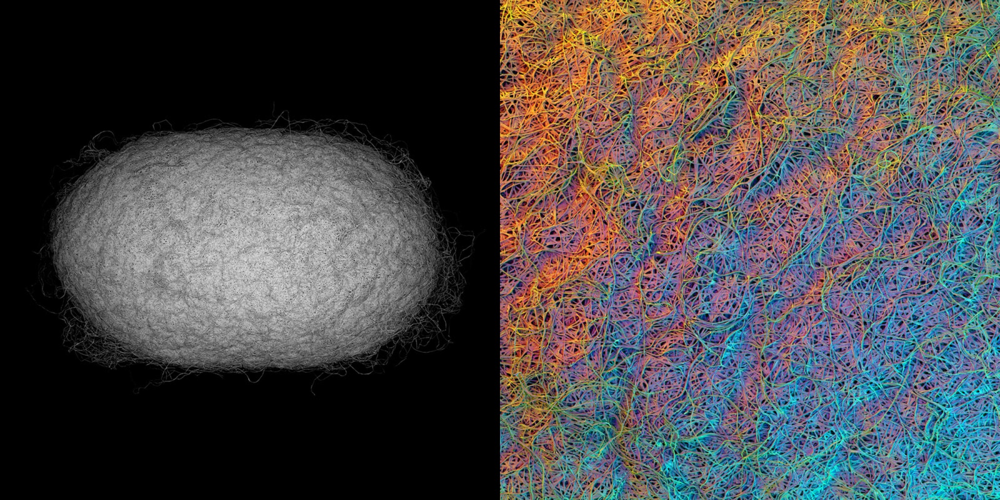

El "Silk Pavilion" es una estructura arquitectónica creada mediante una combinación de fabricación robótica y construcción natural llevada a cabo por gusanos de seda. Inspirado en la capacidad del gusano de seda para generar un capullo tridimensional a partir de un solo hilo, el proyecto explora el uso de organismos vivos como "impresoras biológicas" para crear estructuras arquitectónicas, integrando procesos naturales con tecnologías de fabricación avanzada.
El pabellón tiene una cúpula de tres metros de ancho y fue construido en un periodo de tres semanas. Durante este tiempo, 6,500 gusanos de seda participaron en la creación de la estructura, hilando un solo filamento de seda cada uno, con una longitud aproximada de 1 km. En conjunto, los gusanos produjeron un hilo en forma de cúpula tan largo como la Ruta de la Seda.
LA CONSTRUCCIÓN DEL "SILK PAVILION" SE LLEVÓ A CABO EN DOS FASES PRINCIPALES:
El proceso comenzó con la creación de una estructura base compuesta por 26 paneles poligonales hechos de hilos de seda, dispuestos por una máquina de Control Numérico Computarizado (CNC). Un brazo robótico depositó el hilo en patrones específicos sobre los paneles, diseñados en base al análisis del comportamiento de los gusanos de seda y sus patrones naturales de tejido. La estructura inicial permitió guiar la participación biológica posterior y establecer una base que los gusanos reforzarían con sus propias capas de seda.
Una vez establecida la base, se liberaron 6,500 gusanos de seda en el borde inferior del andamiaje. Los gusanos comenzaron a hilvanar parches planos de seda no tejida, reforzando localmente las brechas entre las fibras depositadas por la máquina CNC. La geometría del pabellón fue generada mediante un algoritmo que determinó la colocación de un hilo continuo a través de los parches, proporcionando diferentes grados de densidad en la seda, basados en el comportamiento del propio gusano. Los gusanos tendían a migrar hacia las áreas más oscuras y densas debido a su sensibilidad a la luz natural y al calor, lo que permitió calibrar el grosor de las láminas de seda de acuerdo con las especificaciones deseadas.
El diseño del pabellón también incluyó un diagrama del recorrido del sol, que registraba la posición solar en todo momento durante la instalación. Este diagrama se utilizó para determinar la colocación de aperturas en los paneles y modular la distribución de la luz y el calor sobre la superficie, influyendo así en la ubicación de los gusanos y la densidad de la seda en diferentes partes de la estructura.
Tradicionalmente, la seda se obtiene hirviendo a las larvas vivas en sus capullos para extraer el hilo, lo que no permite que los gusanos completen su ciclo vital. En contraste, el "Silk Pavilion" propuso un enfoque en el que los gusanos de seda hilasen la seda, se pupasen y se metamorfoseasen en un ciclo continuo. Este enfoque abre la posibilidad de una co-fabricación y cohabitación entre humanos y gusanos.
El proyecto reveló cómo los gusanos de seda varían la composición de la seda según las condiciones ambientales, modificando la proporción de sericina (la matriz adhesiva) y fibroína (la fibra estructural) para ajustar la rigidez y la suavidad del capullo. A lo largo de 24 a 72 horas de hilado, los gusanos crearon una estructura con una pared exterior rígida y un interior suave, adaptado para su metamorfosis.
Además, los 1.5 millones de huevos producidos por los gusanos de seda durante el proyecto podrían utilizarse para construir hasta 250 nuevos pabellones, demostrando el potencial de un enfoque de fabricación regenerativa y sostenible.
RELACIÓN CON LOS PRINCIPIOS DE LOS NUEVOS MEDIOS DE LEV MANOVICH
Lev Manovich relata la revolución de la computadora da lugar a nuevos medios de comunicación y define los nuevos medios sobre cinco principios básicos: representación numérica, modularidad, automatización, variabilidad y transcodificación cultural.
Manovich habla sobre la "combinación de medios" y cómo los nuevos medios permiten una fusión entre lo digital y lo físico. En este proyecto, vemos una intersección entre los medios digitales (como el diseño computacional) y los biológicos (la participación de los gusanos de seda).Oxman utiliza un enfoque de "fabricación mediada" en el que los medios computacionales generan estructuras y guían a gusanos para crear nuevas formas.
Este autor también enfatiza la importancia de los algoritmos y la automatización en los nuevos medios, un aspecto que está presente en el "Silk Pavilion". El uso de un algoritmo que determina la densidad y el patrón de las estructuras tejidas por los gusanos es un claro ejemplo de cómo los procesos computacionales pueden ser utilizados para trabajar en conjunto con seres vivos, esto refleja un cambio de paradigma hacia la ecología digital, en el que la creación de medios no solo involucra a humanos y máquinas, sino que incorpora la naturaleza de manera colaborativa.
PRINCIPIOS DE LOS NUEVOS MEDIOS: